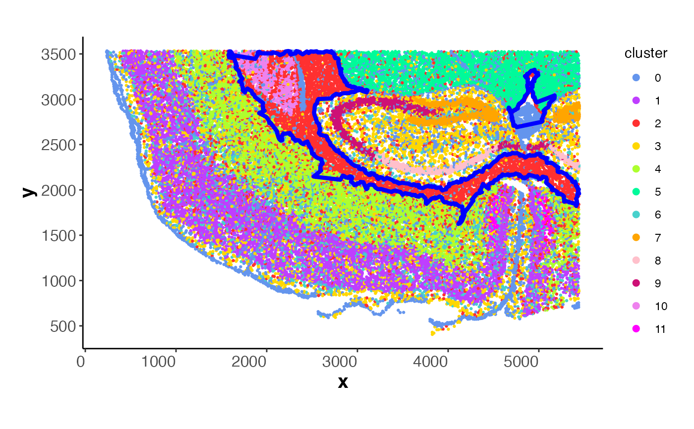

Overlays boundary polygons or linestrings
on a spatial ggplot2 plot. This function adds an sf geometry layer
to display complete boundary shapes for visualizing spatial clusters,
rings, or enriched zones.
Value
A ggplot2::geom_sf layer that can be added to an existing plot.
Examples
coords <- readRDS(system.file("extdata", "MouseBrainCoords.rds",
package = "SpNeigh"
))
boundary_points <- GetBoundary(
data = coords, one_cluster = 2,
subregion_method = "dbscan",
eps = 120, minPts = 10
)
boundary_polys <- BuildBoundaryPoly(boundary_points)
# Add boundary polygons to the plot
PlotBoundary(coords) +
AddBoundaryPoly(boundary_polys, color_boundary = "blue")
